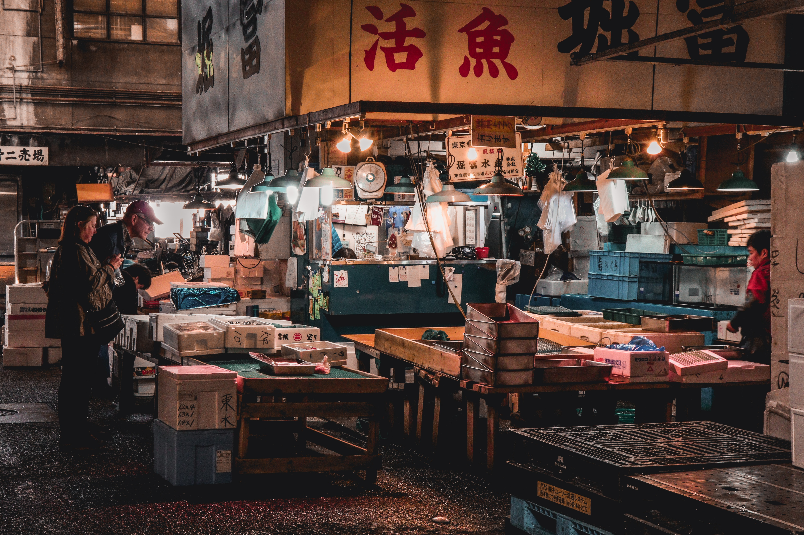
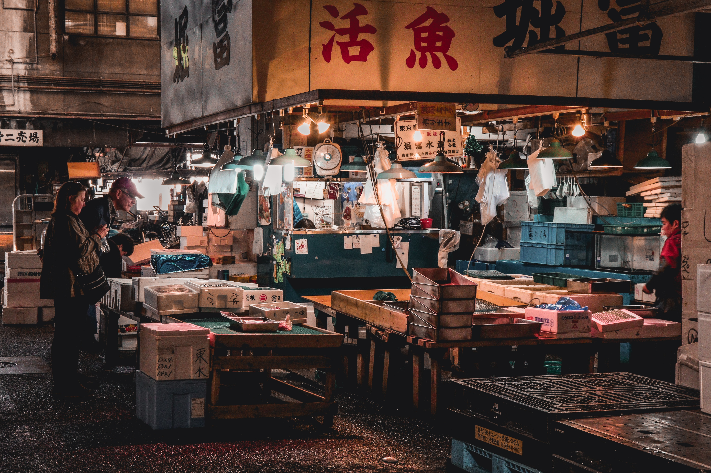
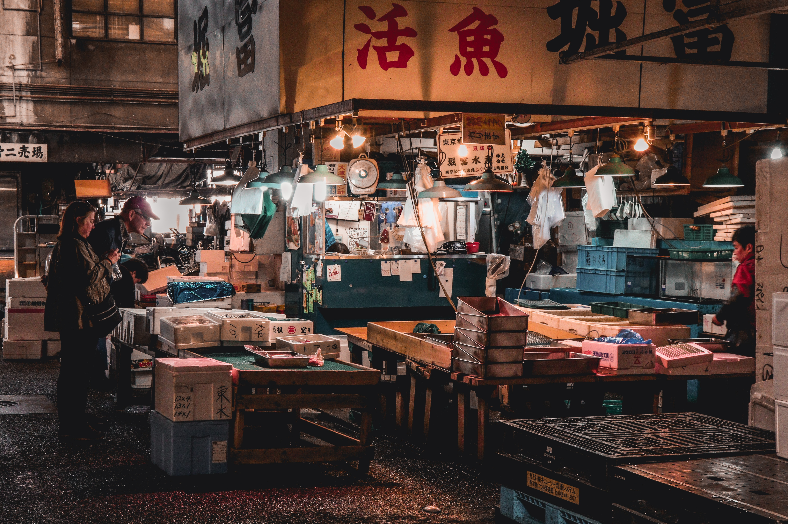

A trip to Tokyo can an unforgettable experience. The city is a perfect blend of tradional and mdern culture, with its bustling streets, vibrant nightlife and delicious food. The city has a rich history and many historic sites such as the Sensoji Temple and the Meiji Shrine.
Things to do and see:
Visit the Tokyo Skytree
Explore the Tsukiji Fish Market
Take a stroll in the Shinjuky Gyoen national Garden
See a Kabuki Theater Show
Images

Getting there and where to stay
The best way to get to Tokyo is by air, with both Narita and Handea airports serving as major hubs for international flights. As for accomodations, ther are many options available, from budget-friendly hostles to luxury hotels. Staying in the Shinkuku area is recommended for easy access to transportation and many attractions.
Tips and Recommendations:
Be prepared to walk a lot, wear comfortable shoes.
Don't be afraid to try new food, Japan has a wide variety of delicious foods to offer.
Learn a few basic phrases in Japanese, it will make communication easier.
Remember to bring an adapter for your electronic devices
Top 5 Places to visits Outside of tokyo for a Day Trip
Nikko - a UNESCO World
Heritage site known for its beautiful shrines and temples. Located about 81
miles north of Tokyo.
Kamakura - a coastal city known for its ancient Buddhist
statues and temples. Located about 31 miles south of Tokyo.
Hakone - a
mountainous area known for its hot springs, outdoor activities, and views of Mt.
Fuji. Located about 62 miles west of Tokyo.
Yokohama - a port city known for its
history, shopping, and dining options. Located about 25 miles southwest of
Tokyo.
Enoshima - a small island known for its beaches, hiking trails, and
sea-side shrines. Located about 37 miles south of Tokyo.

 
